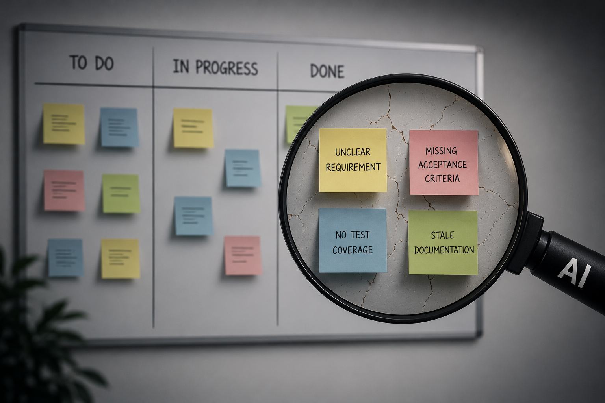
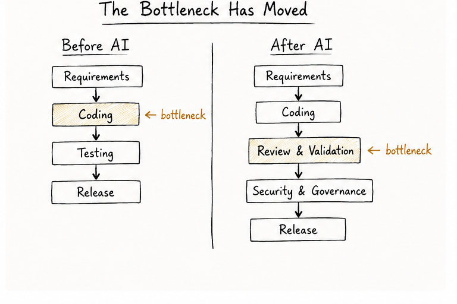
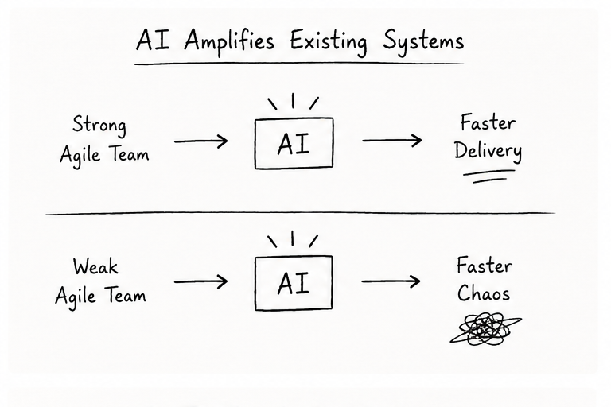
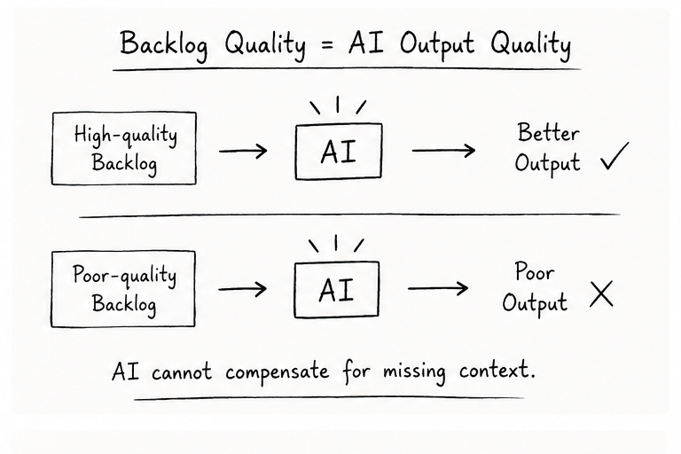
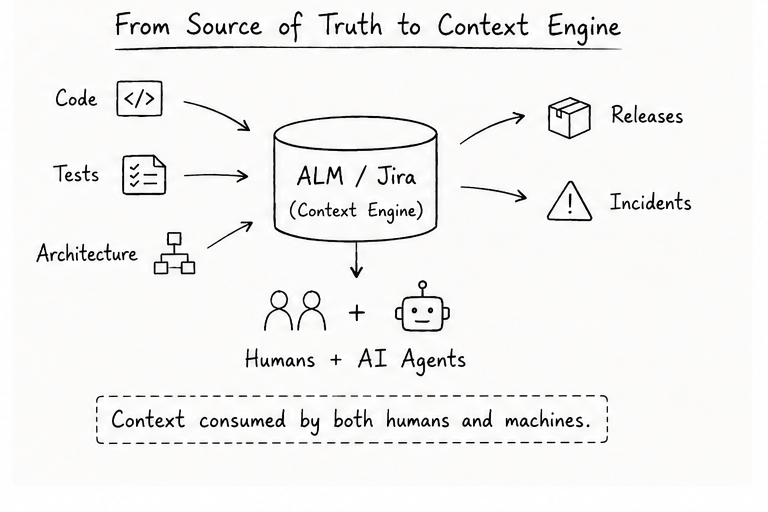

A few years ago, many Agile teams worried about moving too slowly.
Today, a different concern is emerging.
Teams can generate code, tests, documentation, and even user stories faster than ever before. AI assistants can produce in minutes what previously took hours. Entire prototypes appear in days instead of weeks.
Yet many organizations are discovering something surprising:
More output does not automatically create more value.
In fact, AI is revealing an uncomfortable truth about software delivery:
AI is not replacing Agile. It is stress-testing Agile.
The teams that already have strong engineering discipline, healthy feedback loops, and clear business alignment are seeing meaningful gains. The teams with weak practices are often creating more work faster.

Agile Was Never About Writing Code Faster
When people think about Agile, they often associate it with stand-ups, story points, sprint planning, retrospectives, and Jira boards.
But those were never the real goal.
The original Agile principles focused on:
- Customer collaboration
- Rapid feedback
- Working software
- Continuous adaptation
- Responding to change
In other words, Agile was designed to optimize learning. Software delivery was always a feedback system.
AI does not change this fundamental reality. What AI changes is the speed at which work can move through the system. And whenever a system speeds up, its bottlenecks become easier to see.
The New Bottleneck Is No Longer Coding
For many software teams, coding itself is becoming a smaller percentage of total delivery effort. AI can now help with:
- Boilerplate generation
- CRUD APIs
- Unit tests
- Documentation drafts
- Refactoring suggestions
- Code explanations
- Technical research
The result? The bottleneck shifts elsewhere. Teams increasingly spend time on:
- Clarifying requirements
- Reviewing generated code
- Security validation
- Architecture decisions
- Integration challenges
- Production debugging
- Compliance reviews
- Cross-team coordination
This is why many teams feel simultaneously faster and slower. Code appears quickly. Confidence does not. A feature that takes one hour to generate may still require several days to validate. The effort has not disappeared. It has moved.

Why Weak Agile Practices Become More Visible
Imagine two Agile teams.
Team A — their backlog contains:
- Clear business goals
- Well-written acceptance criteria
- Known dependencies
- Updated documentation
- Strong automated testing
- Clean CI/CD pipelines
Team B — their backlog contains:
- Ambiguous stories
- Missing requirements
- Outdated documentation
- Weak test coverage
- Unclear ownership
Now give both teams the same AI coding assistant. Most leaders expect both teams to become dramatically faster. That rarely happens.
Team A usually accelerates. Team B often accelerates into confusion.
Why? Because AI consumes context. Poor context produces poor output. The old software engineering saying still applies:
Garbage in, garbage out.
Except now it happens much faster.

Backlog Quality Is Becoming Fuel Quality
For years, many teams treated backlog maintenance as administrative work. Stories were often written hurriedly. Acceptance criteria were vague. Dependencies remained undocumented. Developers figured things out during implementation.
AI changes the economics of this behavior.
When AI is asked to generate code, tests, estimates, or documentation, it relies heavily on the information available in the backlog and surrounding systems. A vague story leads to vague implementation. An incomplete requirement leads to incomplete output.
This is why Definition of Ready suddenly matters more than many teams realize. An AI-ready story often needs:
- Clear business value
- Explicit acceptance criteria
- Relevant design references
- Dependency information
- Security requirements
- Testing expectations
The quality of delivery increasingly depends on the quality of context. In AI-assisted Agile, backlog quality is no longer administrative work. It is fuel quality.

Why Jira Matters More, Not Less
Some people assume AI will reduce the importance of Agile lifecycle tools. The opposite may happen.
Historically, Jira, Azure DevOps, Rally, and similar tools primarily served humans. Managers tracked progress. Developers viewed assignments. Product Owners managed priorities.
In the AI era, these systems are becoming something more important. They are becoming context engines. AI systems increasingly consume information from:
- Epics
- Features
- Stories
- Pull requests
- Test results
- CI/CD pipelines
- Architecture documents
- Incident records
- Release notes
This means the organization's delivery data is no longer just a reporting mechanism. It becomes operational knowledge.
In Agile, Jira used to tell people what was happening. In AI-assisted Agile, Jira teaches machines what the organization believes is true.
That makes data quality a strategic capability.

Definition of Done Needs an Upgrade
One of the most dangerous misconceptions in the AI era is assuming generated work is finished work.
We've all seen AI produce impressive outputs. Working code. Passing tests. Detailed documentation.
But generated does not mean correct.
Generated does not mean secure.
Generated does not mean maintainable.
Generated does not mean valuable.
Many organizations are therefore evolving their Definition of Done to include:
- Human review
- Security validation
- Automated test execution
- Architecture compliance checks
- Documentation updates
- Traceability to work items
- Governance requirements
The principle is simple:
With AI, Done cannot mean generated. Done must mean verified.
Agile Roles Are Changing, Not Disappearing
Whenever a new technology wave arrives, predictions about role elimination quickly follow. The reality is usually more nuanced. AI changes how people work. It does not eliminate accountability.
- Product Owners: Need stronger business context and acceptance criteria.
- Scrum Masters and Agile Coaches: Need to help teams establish AI working agreements and healthy delivery practices.
- Developers: Spend less time writing boilerplate and more time reviewing, integrating, validating, and making design decisions.
- Test Engineers: Focus more on risk-based testing and validating AI-generated artifacts.
- Architects: Become increasingly important in defining guardrails, governance, and technical direction.
The common theme is clear. AI reduces some manual effort. But it increases the premium on judgment.
Velocity Was Already Imperfect. AI Makes It Worse.
Many Agile teams have long debated whether velocity truly measures value. AI complicates the discussion even further.
Suppose a developer completes twice as many story points because AI generated much of the implementation. Has productivity doubled? Maybe. Maybe not. What if review effort doubled as well? What if defect rates increased? What if rework increased? What if customers saw no improvement?
This is why leading organizations are increasingly looking beyond velocity. Metrics such as:
- Lead time
- Cycle time
- Review time
- Deployment frequency
- Escaped defects
- Rework rate
- Change failure rate
- Customer outcomes
…provide a more complete picture.
AI may increase velocity. But does it improve flow?
The Teams That Win Will Not Be the Teams Using the Most AI
This may be the most important lesson.
Organizations often focus on selecting the best AI tool. That matters. But it is not the primary differentiator. The bigger differentiator is operational discipline.
The teams seeing the strongest results typically have:
- Clear product direction
- Strong engineering practices
- High-quality delivery data
- Automated quality controls
- Effective feedback loops
- Good architectural governance
AI amplifies these strengths. It also amplifies weaknesses. The technology is powerful. But the underlying system still matters.
Final Thoughts
The Agile Manifesto does not need rewriting because of AI. The fundamental ideas remain remarkably relevant.
- Customer feedback still matters.
- Working software still matters.
- Adaptability still matters.
- Human judgment still matters.
What AI changes is the speed of the feedback loop. And faster feedback exposes reality sooner.
Strong teams become stronger. Weak practices become harder to hide.
That is why the most useful way to think about AI and Agile is not that AI is replacing Agile. It is stress-testing it.
And the teams that learn from that stress test will be the ones that thrive in the years ahead.